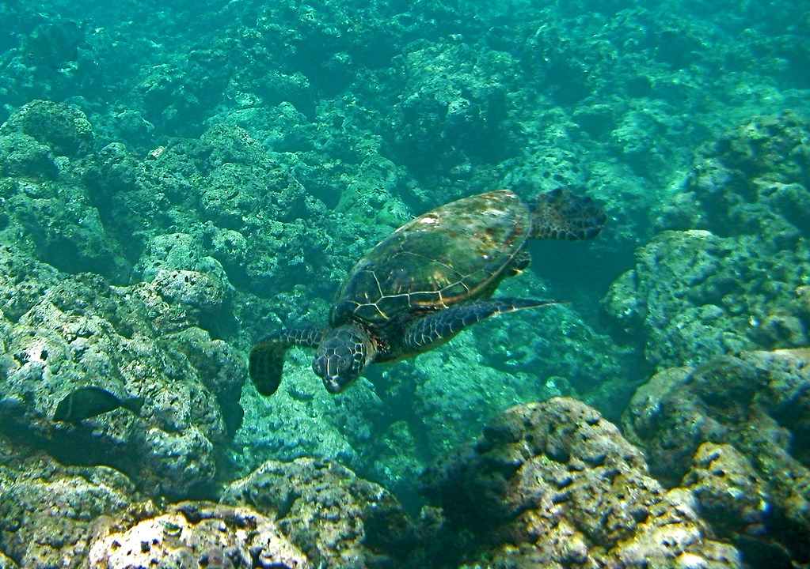
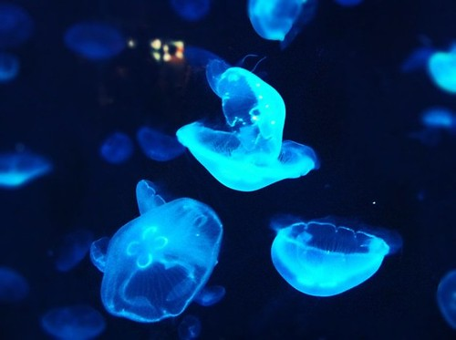

Jellyfish Fun Facts!
Jellyfish are very different from any other animal. They don't have a spine, they don't have vital organs, yet they've been thriving for millions of years. Here is a list of some interesting and funny jellyfish facts!
- Jellyfish are invertebrates, this means that they have no spine.
- Most jellyfish are carnivorous.
- Jellyfish are the oldest multi organ animal in the world, predating dinosaurs, sharks and humans.
- Many jellyfish are bioluminescent and can produce light naturally.
- Jellyfish come in many different colours: red, green, blue, yellow, etc.
- Jellyfish are mostly made up of a gel like substance called mesoglea.
- Jellyfish are 98% water!
- Their simple nervous system allows them to sense pressure and see.
- Jellyfish can propel themselves by squirting water out of their mouth.
- Certain types of jellyfish can digest their food in less than 5 minutes (it takes us humans 24 hours to digest a meal!)
- The smallest jellyfish can weigh less than an ounce!
- The largest jellyfish can weigh over 300 pounds!
- Box jellyfish can have as many as 24 eyes, with 2 eyes sticking out vertically!
- A group of jellyfish is called a smack or a bloom.
- The most poisonous jellyfish, the Chironex Fleckeri, has been nicknamed the “Sea Wasp” for having such a damaging sting.
- Sea turtles love eating jellyfish!
- There are animals that are known to hide in jellyfish blooms to escape predators.
- Jellyfish can still sting even after death! Be careful!
- Jellyfish are not fish!
- Jellyfish breathe through their membrane.
- Jellyfish live in all oceans.
- In 1991, 2000 polyps went to space as an experiment. They turned into jellyfish but they didn’t function properly with gravity when they came back to earth.

